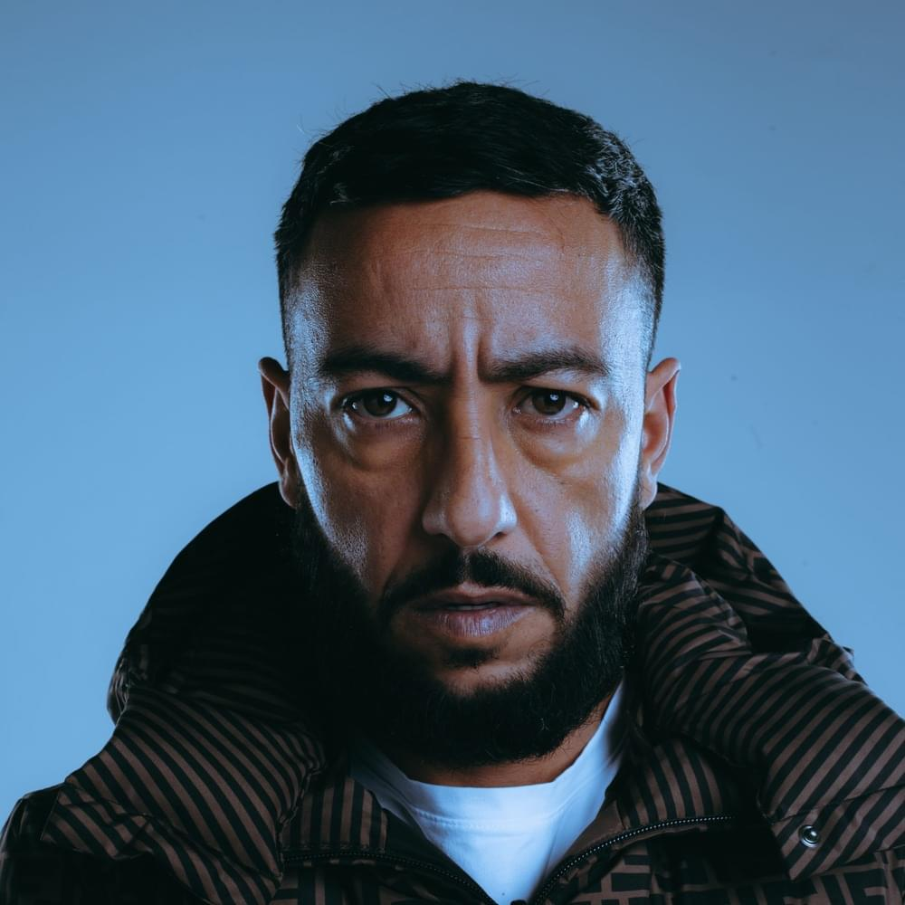

NewBiographie
Lacrim, de son vrai nom Karim Zenoud, est un rappeur, acteur, entrepreneur franco-algérien né le 19 avril 1985 dans le 20e arrondissement de Paris. Son nom de scène est une contraction de la brigade de police criminelle, surnommée « la Crim » par apocope.